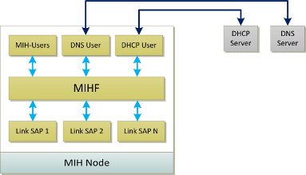
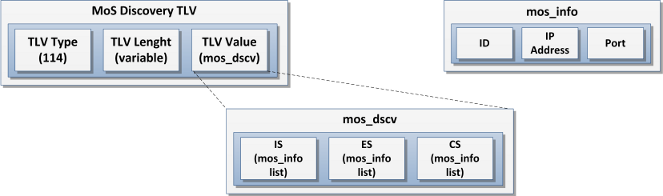
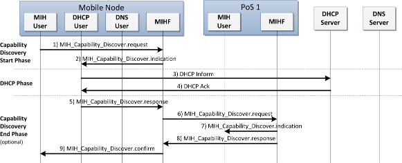
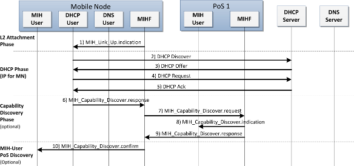
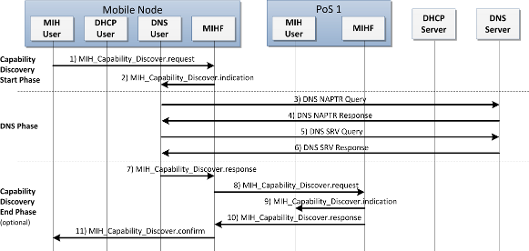
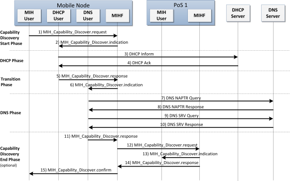

The remote discovery mechanisms involve the discovery of peer MIHFs and its capabilities. This is known as MIHF discovery and it can be achieved by using L2 or L3 discovery mechanisms. It allows a MN to discover 802.21-enabled network entities and vice-versa, as well as a network entity to discover each other. In addition, by combining it with the MIH Capability Discover procedure, it is possible to find out the capabilities of the discovered entities, i.e., the services provided by them.
The ODTONE implementation provides L3 mechanisms which enable the remote discovery. It can be achieved by using the MIH Capability Discover procedure defined in the IEEE 802.21 standard and/or mechanisms that involve using DHCP and DNS services. Compared with the standard architecture of the IEEE 802.21, the node has two new components: DHCP and/or DNS users. These are seen as MIH-enabled entities of the upper layers (i.e., MIH-Users) with which the MIHF interacts to request the discovery of available PoS. The DNS-User and the DHCP-User are then responsible for directly communicate with the respective server, in order to discover PoS entities and to obtain associated transport information.

![[Note]](../../images/note.png) |
Note |
|---|---|
The DNS-User and DHCP-User are working only for Linux. However, you can implement your own discovery entities with guidelines defined as follows. |
The MIH protocol does not support the necessary mechanisms to carry the information about the discovered entities. Therefore, a new optional TLV type was created and added to the MIH_Capability_Discover messages of the base ODTONE implementation. Consequently, a new data type was defined as well.

The MOS_DSCV data type carries the discovered PoS divided by service type. Each PoS is identified by an instance of the MOS_INFO data type, which carries information about its ID, IP address and listening port.
The L3 discovery mechanisms can be enabled by registering a MIH-User (with the discovery role) with the MIHF. The order by which they are registered defines the order by which the entities will be requested for discovering PoS. For example, if no entity is configured with discovery role, the discovery mechanisms will not be enable and therefore, the discovery mechanisms are the default ones, i.e., it is only possible to discover entities by multicasting MIH Capability Discover messages as defined in the IEEE 802.21 standard. Otherwise, the discovery mechanisms are enabled and, upon the receiving of a discovery request, the MIHF invokes the first discovery entity configured. By receiving the discovery results, the MIHF checks if all necessary information about the PoS was discovered and, based on that, decides to complement it with other discover mechanism or to initiate the MIH Capability exchange procedure.
The discovery entities retrieve the discovered information to the MIHF divided by services, i.e., for each service the MIHF receives a list of available PoS, which are individually requested for its capabilities. However, with this approach, if a given PoS provides more than one service it appears in more than one list and therefore, it is requested more than once for its capabilities. To avoid this repetition the MIHF tracks the requested PoS and, if it detects a repeated one it drops the request.
The following figures represents the discovery scenarios using the DNS and DHCP services provided by ODTONE.



